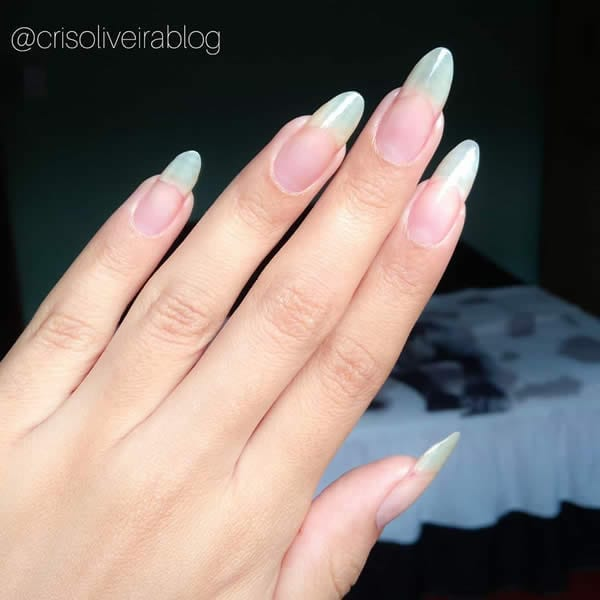

Dicas e produtos para ter unhas grandes e saudáveis

Dicas
- Hidrate e empurre as cutículas ao invés de tirar
- Cerinhas para cutículas são excelentes para manter elas hidratadas
- Use sempre uma base fortalecedora
- Lixe suas unhas para evitar que elas quebrem
- Faça intervalos sem esmalte
- Use removedores de esmalte SEM acetona
- Uma boa alimentação é essencial para as unhas crescerem saudáveis
Produtos
- Amolecedor de cutículas - IDEAL
- Cera hidratante de cutículas - ANITA
- Base seda - RISQUÉ
- Sérum fortalecedor - ANITA
- Removedor de esmalte sem acetona - BEIRA ALTA